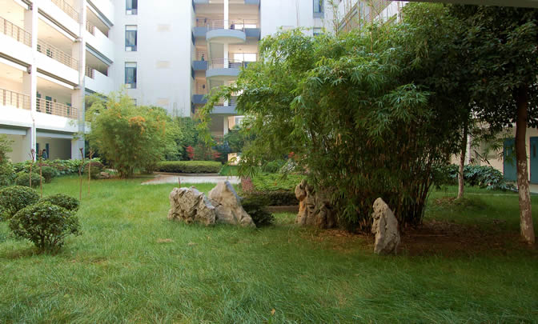
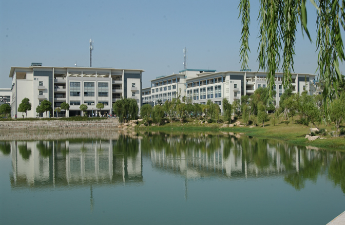
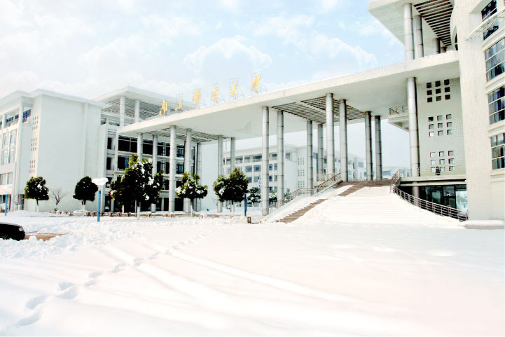

南京邮电大学介绍

南京邮电大学（NJUPT），是教育部、工业和信息化部、国家邮政局与江苏省共建高校，首批国家双一流（世界一流学科建设高校），江苏高水平大学建设高校；入选国家“2011计划”、“111计划”、教育部“卓越工程师教育培养计划”、”新工科研究与实践项目“、国家级大学生创新创业训练计划，国际电信联盟首个学术成员，CDIO工程教育联盟成员单位，国际电信联盟亚太电信组织在华培训基地之一；是以电子信息为特色，工学门类为主体，理、工、经、管、文、教、艺、法等多学科相互交融，博士后、博士、硕士、本科等多层次教育协调发展的综合性重点大学，享有“华夏IT英才的摇篮”之誉。
软件工程介绍
软件工程是一门研究用工程化方法构建和维护有效的、实用的和高质量的软件的学科。它涉及程序设计语言、数据库、软件开发工具、系统平台、标准、设计模式等方面。在现代社会中，软件应用于多个方面。典型的软件有电子邮件、嵌入式系统、人机界面、办公套件、操作系统、编译器、数据库、游戏等。同时，各个行业几乎都有计算机软件的应用，如工业、农业、银行、航空、政府部门等。这些应用促进了经济和社会的发展，也提高了工作效率和生活效率 。
学长J说：
在南邮度过的时光里，我掌握了C、C++、Java、python、HTML等多门语言，数据库、Linux等多门相关技术，学校的培养方案让我具备了扎实的专业素养。在南邮相遇了很多优秀的老师，给我带来了许多课本外的前沿知识拓展了我的视野，也有幸参与过一位老师的项目，在学姐学长和老师的帮助下，学习了很多。南邮计算机是一门非常棒的专业，有优秀的师资，欢迎学弟学妹们报考。
学长F说：
南邮的就业相当不错，排在南京高校的前三。特别是工科的学生基本都能毕业后找到一份不错的工作，虽然南邮不是985但是在江苏的就业待遇是不差于东南大学、南航等高校的，南邮是一所性价比很高的学校。除了就业南邮有丰富的社团活动，从羽毛球的体育社团，到日漫的文化社团都一一具全，校内经常开展社团活动，时常能在校园里上看见。南邮的学习氛围也是很好的，图书馆几乎是一座难求，学习是南邮的主旋律。欢迎大家报考南邮。